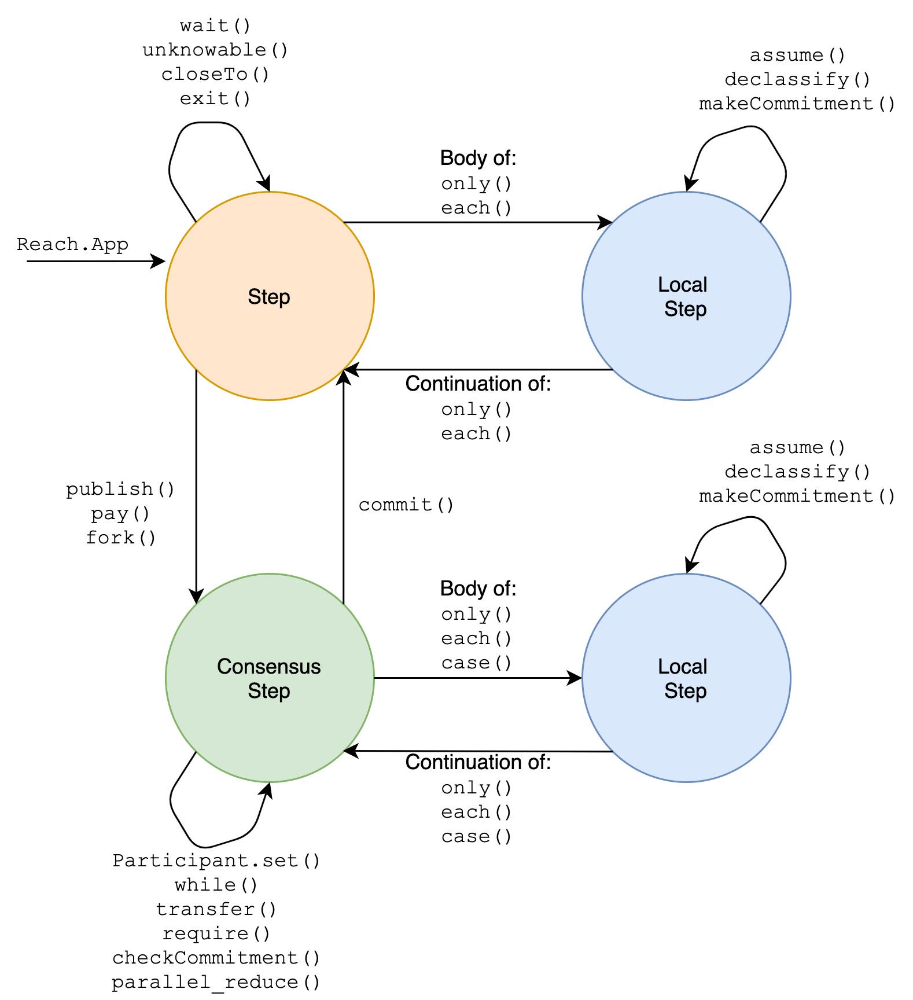

0.1.2
5.4 Programs
This document describes the structure and content of Reach programs, including their syntactic forms, the standard library, and the standards of valid programs.
The rest of this section is structured according to the contexts of the different parts of a Reach program, as follows:
Validity describes what is meant by the term valid in Reach.
Local Steps describes the structure of Reach local steps.
Consensus Steps describes the structure of Reach consensus steps.
Computations describes the common structure of Reach computations shared by all contexts.
Figure 17 shows the relationship between the modes of a Reach application.
